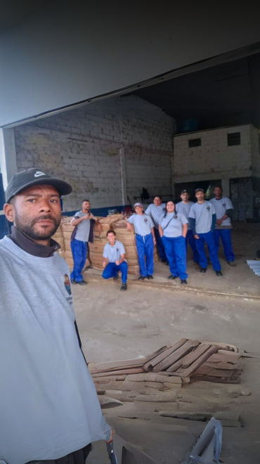
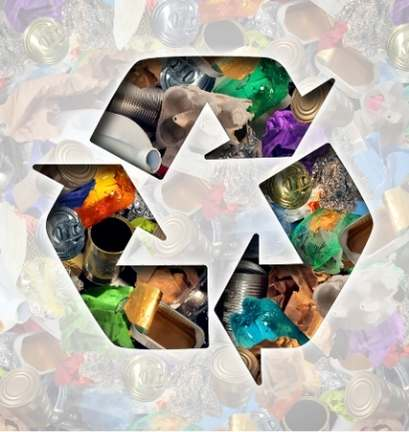
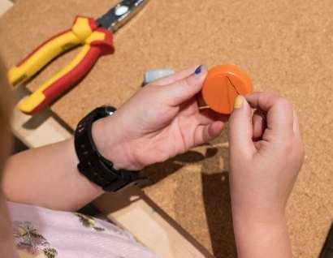

Cooperativa
Fênix
Coleta Seletiva - Artesanato Sustentável - Educação Ambiental
Coleta Seletiva - Artesanato Sustentável - Educação Ambiental
Fundada em 18 de abril de 2024, na cidade de Teresópolis, Rio de Janeiro, a Cooperativa
de
Trabalho de Catadores de Materiais Recicláveis Fênix nasceu do desejo de transformar a
realidade
de catadores de materiais recicláveis da região.
Operando a partir de sua sede
localizada na
Estrada Caxambu, S/N, no bairro Três Córregos, a cooperativa se dedica ao comércio
atacadista de
resíduos de papel, papelão, metal, sucata e outros materiais recicláveis, contribuindo para a
sustentabilidade ambiental e a inclusão
social.
Esses líderes trabalham em conjunto para assegurar que a cooperativa não só alcance seus
objetivos econômicos, mas também cumpra seu papel social de forma eficiente e ética.
Vitor da Silva Sant'Ana - Presidente
Glaucia Fernanda Fischer de Jesus - Diretora
João André da Silva Neto - Diretor
Thais Ramos de Araújo - Diretora

Nossa missão é promover a inclusão social dos catadores, garantindo melhores condições de trabalho, acesso a direitos e a possibilidade de um futuro mais digno e sustentável para todos os envolvidos, enquanto contribuímos para a preservação do meio ambiente através da reciclagem e da educação ambiental.
Ser uma referência em gestão de resíduos recicláveis no estado do Rio de Janeiro, reconhecida por nossa atuação ética e eficaz na valorização dos catadores e na preservação do meio ambiente.
Compromisso com a preservação ambiental e a promoção de práticas sustentáveis.
Empoderamento dos catadores, oferecendo oportunidades de formalização e capacitação.
Gestão clara e acessível, garantindo a confiança de nossos cooperados e parceiros.
Trabalho colaborativo, essencial para o fortalecimento de nossa comunidade e para alcançar nossos objetivos.
Realizamos a coleta de materiais recicláveis em
residências,
empresas e instituições, contribuindo para a redução do impacto ambiental.
Oferecemos serviços de coleta e comercialização de resíduos de papel, papelão, metal, sucata e
outros materiais recicláveis, garantindo a destinação correta e a valorização dos resíduos.
Atuando diretamente no processo de reciclagem que beneficia tanto o meio ambiente quanto
as comunidades locais.
Transformamos materiais recicláveis em peças de artesanato únicas, promovendo a economia circular e gerando renda para nossa comunidade.


.jpg)
.jpg)
Entre em contato conosco para saber mais sobre nossos serviços e como você pode contribuir para a sustentabilidade e a inclusão social em Teresópolis.
Fale com Thais Ramos de Araújo: 21 96856-9437
Fale com Vitor da Silva Sant'Ana: 21 96679-9605
.jpg)
.jpg)
.jpg)
.jpg)
.jpg)
.jpg)
.jpg)
.jpg)
.jpg)